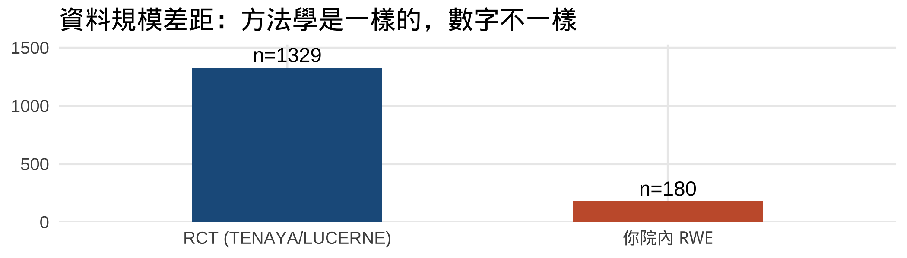

讓你的 Vabysmo RWE 長得像 Ophthalmology 論文
眼科醫師研究工作坊教材
前言
歡迎來到「讓你的 Vabysmo RWE 長得像 Ophthalmology 論文」工作坊。
這份教材的目標不是讓你學會 R，也不是讓你學會 MMRM 或 CMH 的數學原理。 是讓你下課後做得到這件事：
拿你院內的 Vabysmo cohort，產出可以投 Ophthalmology 的圖表。
🔗 重要連結（書籤起來）
📌 跑這本書 / 跑這課
| 用途 | 連結 |
|---|---|
| 📖 線上書（這本，可分享） | https://htlin222.github.io/roche-vabysmo-rwe-workshop/ |
| 📦 程式碼 repo（給 Posit.Cloud fork） | https://github.com/htlin222/roche-vabysmo-rwe-workshop |
| 🧪 Posit.Cloud（瀏覽器跑 RStudio） | https://posit.cloud/ |
| 🎁 老師預烤 Posit.Cloud project（建議路線） | 🎤 現場由老師發放 |
🤖 AI 助手（free-tier 都可以）
| 工具 | 連結 |
|---|---|
| ChatGPT | https://chat.openai.com/ |
| Google Gemini | https://gemini.google.com/ |
| Claude | https://claude.ai/ |
3 選 1 即可，本書的 📋 prompt 在哪一個都跑得出 R code。
📑 參考材料 / 速查
| 用途 | 連結 |
|---|---|
| 原始論文（CC BY 全文） | Cheung 2025 Ophthalmology — DOI |
| 院內 csv schema | data/data_dictionary.md |
| 模擬資料下載 | data/ 全部 csv |
| 課堂 FAQ（29 Q&A） | docs/faq.md |
| 名詞 / 縮寫速查 | Appendix G |
| 統計 / 程式 ELI5 | Appendix E、F |
🎓 給老師、助教（學員可略過）
| 用途 | 連結 |
|---|---|
| TA 工作手冊 | docs/ta-handbook.md |
| 老師課前預烤 SOP | docs/posit-cloud-setup.md |
| 對口 / 內部行事曆 | docs/internal-notes.md |
| Issues / 教材 bug 回報 | https://github.com/htlin222/roche-vabysmo-rwe-workshop/issues |
課程目標
今天結束時，你應該可以：
- ✅ 看懂一篇眼科 RWE paper 的圖表是用什麼方法跑出來的
- ✅ 把問題講清楚，讓 AI 幫你寫 R 程式碼
- ✅ 在 Posit.Cloud 上跑出 Table 1 + Figure 1（MMRM）+ Figure 2（CMH）
- ✅ 把同一份 code 套到「你院內的 csv」，看圖換掉
- ✅ 知道你回院後要請 IT 撈什麼樣的資料
這堂課的玩法
| 步驟 | 你做的事 |
|---|---|
| 1 | 複製本書的「📋 prompt」 |
| 2 | 貼給 AI（ChatGPT / Gemini / Claude，free-tier 即可） |
| 3 | AI 給你 R code |
| 4 | 貼到 Posit.Cloud 跑 |
| 5 | 看結果、聽我們解釋 |
你的工作是「問對問題」、「看懂結果」，不是「寫對程式」。
🔖 看到陌生縮寫不要慌
本書最後的 Appendix G「名詞速查表」 整理了眼科、試驗、統計、工具的所有縮寫。 看到 BCVA / CST / MMRM / CMH / Q4W 等不認得 → 翻 appendix G.1–G.5。 看到方法概念不懂（什麼是 random intercept、censoring）→ 翻 appendix E、F 的 ELI5。
TENAYA / LUCERNE：我們今天要 reproduce 的 paper
Cheung CMG, Lim JI, Priglinger S, et al. Anatomic Outcomes with Faricimab vs Aflibercept in Head-to-Head Dosing Phase of the TENAYA/LUCERNE Trials in Neovascular Age-related Macular Degeneration. Ophthalmology. 2025;132(5):519-526.1
一頁懶人包：
| 項目 | 內容 |
|---|---|
| 設計 | TENAYA + LUCERNE 兩個 phase 3 RCT 的 pooled post-hoc analysis |
| N | 1329 病人（faricimab 665 vs aflibercept 664） |
| 時間窗 | 前 12 週 head-to-head dosing phase（兩臂都打同 3 針 Q4W） |
| outcomes | BCVA、CST、IRF/SRF absence proportion、time to first absence |
| statistical methods | MMRM（連續變項）+ CMH-weighted（二元變項）+ Kaplan–Meier（time-to-event） |
| 結論 | faricimab 在 anatomic outcomes（CST、SRF absence）優於 aflibercept，BCVA 接近 |
📖 outcomes 名詞速解
- BCVA = best-corrected visual acuity，最佳矯正視力，用 ETDRS letters 計分（0–100，越高越好）
- CST = central subfield thickness，OCT 量到的中央視網膜厚度（單位 μm）
- IRF / SRF = intraretinal / subretinal fluid，視網膜內 / 下液（OCT 看得到的積水）
- absence proportion = 看不到 fluid 的病人比例（治療目標：把這個比例做高）
- head-to-head = 兩藥同期同 dose 直接對打（前 12 週兩臂都是 Q4W 三針）
📖 method 名詞速解
- MMRM = mixed model for repeated measures，「同一隻眼睛被量很多次」的迴歸
- CMH-weighted = Cochran-Mantel-Haenszel 加權；先在每個分層算差異、再加權平均
- Kaplan–Meier = 「時間到事件」的階梯狀曲線（如多久才把 fluid 擠光）
完整 ELI5 在 Appendix E。
📄 完整 PDF 在
refs/tenaya-lucerne-paper.pdf（CC BY 授權，可下載）。
工作坊全圖
| 章節 | 主題 | 預計時間 | 你會做出 |
|---|---|---|---|
| Part 1 | 認識 paper + 認識資料 | 30–40 min | Posit.Cloud 開好、看到模擬資料的欄位 |
| Part 2 | Table 1 baseline characteristics | 20 min | 一張對得起 paper 的 Table 1 |
| Part 3 | Figure 1：MMRM 跑 BCVA + CST | 40 min | 兩張隨時間變化的曲線圖 |
| Part 4 | Figure 2：CMH 跑 IRF/SRF/both | 30 min | 三張 absence proportion bar chart |
| Part 5 | 換你院內資料 | 30 min | 同一份 code、跑出「假裝是你院內」的 paper draft |
| Part 6 | (bonus) Figure 3：KM + Cox | 20 min | 一張 time-to-event 曲線 |
| Appendix | 你回院之後要做的事 | — | 院內 csv schema、AI 對話技巧、常見錯誤 |
一個重要的觀念
RCT 是「用 1329 個病人證明藥的效果」；RWE 是「用你院內 100–200 個病人展示同一個方法在你的人群跑出什麼樣」。 方法不變，能講的故事略小——這就是為什麼你今天學的 code 可以直接搬。
老師快速指引
- 沒看過 R 也沒關係，跟著「📋 複製這段話貼給 AI」就好
- 卡住舉手，助教會來看
- 結束時你會帶走：一個 Posit.Cloud project + 這本書的 PDF + 院內 csv schema
1.
Cheung CMG, Lim JI, Priglinger S, et al. Anatomic outcomes with faricimab vs aflibercept in head-to-head dosing phase of the TENAYA/LUCERNE trials in neovascular age-related macular degeneration. Ophthalmology. 2025;132(5):519-526. doi:10.1016/j.ophtha.2024.11.023